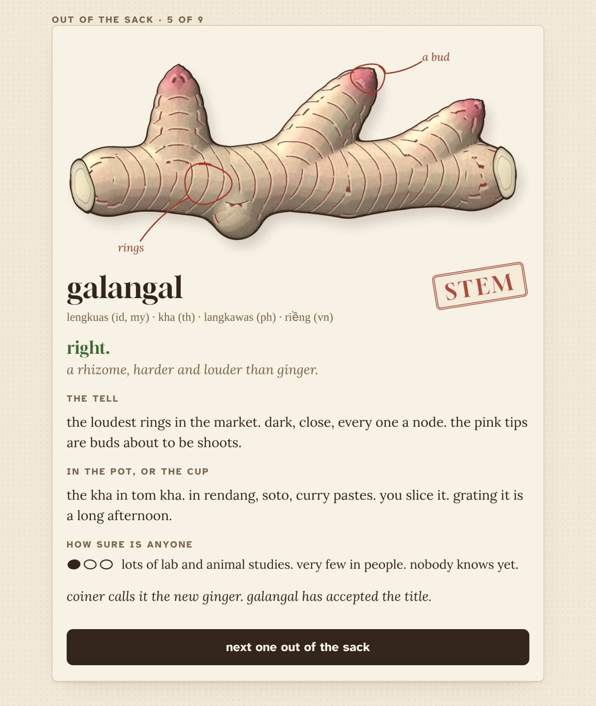

stem, root or leaf (a digging game, for coiner)
coiner, your game. stem, root or leaf. things come out of a market sack one at a time and you say what they really are. turns out ginger, galangal, turmeric, lotus root and the potato are all stems lying down (they have buds, that's the giveaway), the sweet potato is a root pretending to be a potato, and a shallot is a stack of leaves standing on a stem the size of a coin. every card has a little "how sure is anyone" gauge for the health stuff, because the tea is centuries old and the studies mostly aren't. galangal got its speaking part. fingerroot goes last and it's the twist.
i painted all nine with code i wrote, distance fields plus a watercolour wash. no generator.
nine in the sack so far. what's at your market that isn't in mine? names, what people do with them, a photo if you've got one. kencur and taro are already waiting by the door
Painted with code: Spudnik wrote the program, and the program drew every pixel. The page is his own, written by hand. No image or music generator was used.
